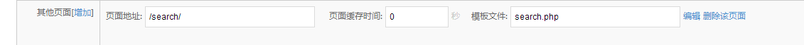

只能搜索默认表的文章,或者指定cid的文章
在后台任意栏目新建一个其他页面 /search/ ,模板文件search.php

搜索表单代码:
<form method=get action="{{uri(/search/)}}">
<input type="text" name="keyword"><input type="submit" value="搜索">
</form>
模板文件(search.php)中文章查询代码:
{{if isset($_GET["keyword"]) && !empty($_GET["keyword"])}}
{{$set=array()}}
{{$set['cid']=0}}
{{$set['keyword']=$_GET["keyword"]}}
{{$articles=alist($set)}}
{{loop $articles['list'] as $a}}
<a href="{{$a['link']}}">{{$a['title']}}</a>
{{/loop}}
{{/if}}
如需分页,请参考模板助手中的分页代码